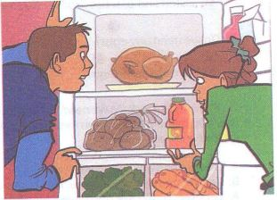

How about some sandwiches?အသားညွပ္ေပါင္မုန္႕စားၾကမလား

Adam: What do you want for the pinnic?
အေပ်ာ္ခရီးတြက္ မင္းဘာလုိခ်င္သလဲ
Amanda: Hmm. How about some sandwiches?
အင္း..အသားညွပ္ေပါင္မုန္႕ဆိုရင္ ေကါ ဘယ္လိုလဲ
Adam: Ok. We have some chicken, but we don't have any bread.
အိုေက။ ငါတို႕မွာ ၾကက္သားေတာ့ရွိတယ္...ဒါေပမဲ့ ေပါင္မုန္႕မရွိဘူး
Amanda: And we don't have any cheese.
ျပီးရင္ ငါတို႕မွာ ဒိန္ခ်ည္လည္း မရွိဘူး
Adam: Do you have some lettuce?
Amanda: Let's see...No, we need some.
ၾကည့္လိုက္မယ္...မရွိဘူး...နည္းနည္းလိုေနတယ္
Adam: Let's get some tomatoes, too.
ခရမ္းခ်ည္သီး နည္းနည္းလည္း ယူၾကမယ္ကြာ
Amanda: OK. And let's buy some potato salad.
အာလူး အသုပ္နည္းနည္း ဝယ္ၾကမယ္
Adam: All right. Everyone likes potato salad.
ေကါင္းျပီး...အာလူး သုပ္လူတိုင္း အၾကိုက္ေပါ့